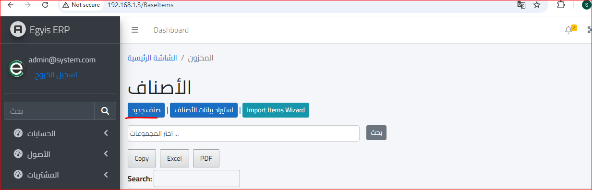
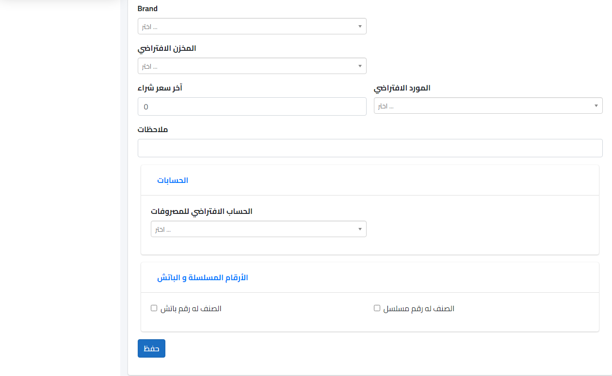

دورة المبيعات
- عرض سعر البيع
- امر بيع
- إذن التسليم
- فاتورة بيع
- قيد سداد
- العرض في دفتر الأستاذ
لكي يتم عمل دورة مبيعات لا بد أولا من تعريف الصنف عن طريق الدخول الى موديول المخازن من القائمة الرئيسية كالتالي :
ثم ستظهر هذه القائمة ونقوم بإختيار صنف جديد لتظهر القائمة التالية :
لكي يتم عمل عرض سعر البيع يجب اولا اضافة العملاء ولكي يتم ذلك يتم فتح موديول المبيعات واختيار العملاء كالاتي :
ثم بعد ذلك سيتم فتح قائمة العملاء وهي كالتالي :
استيراد قائمة عملاء جديدة : ويمكن استخدامها عند وجود شيت اكسيل او استيراد بيانات من مصدر خارجي
مجموعة العملاء : وهي تتيح لك امكانية تقسيم عملائك إلى مجموعات مختلفة بل واختيار مجموعات رئيسية واختيار أخرى فرعية لها كالتالي :
عميل جديد : وهنا عندما يتعلق الأمر بالعميل الجديد من ناحية تسجيله وتفاصيله كما هو موضح :
ثم يتم إدخال البيانات الخاصة بالعميل كما هو موضح ثم النقر على زر حفظ وبذلك تم إدراج العميل بقائمة العملاء كالتالي :